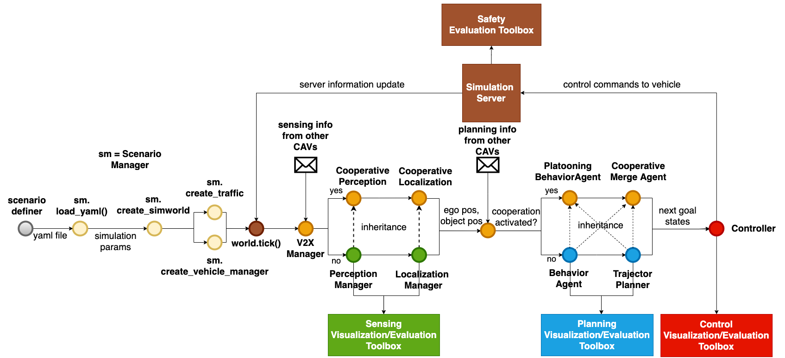
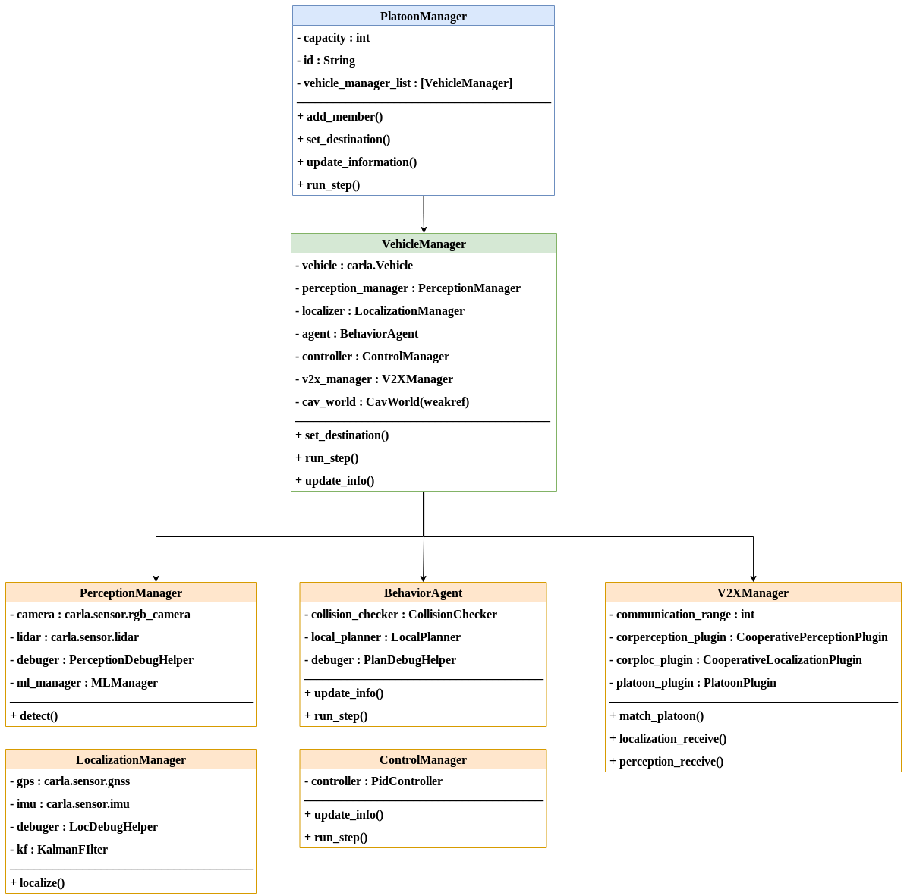

Logic flow
Logic Flow
In this section, we will introduce the logic flow of conducting a scenario test in OpenCDA.
Codebase Structure
Check the codebase structure to see how the codes distributed in OpenCDA.
Overview
As the figure below depicts, to run simulation testings in OpenCDA, there are five general steps:
- The user has to first write a yaml file to configure the settings of simulation server (e.g. sync mode vs async mode), the specifications of the traffic flow (e.g. the number of human drive vehicles, spawn positions), and the parameters of each Connected Automated Vehicle (e.g. lidar parameters, detection model, trajectory smoothness).
- The Scenario Manager will load the yaml file, and deliver the necessary information to CARLA
server to set simulation setting, create traffic flow and generate the CAVs. Each CAV is managed by a class called
VehicleManager. - The simulation server information will be passed to each
VehicleManager. Based on whether the corresponding cooperative modules are activated, theVehicleManagerwill select different perception, localization, and planning modules to send the planned trajectory to theControlManager. The controller will produce control commands and deliver to the simulation server. - The simulation server will apply the received control commands to the vehicles, execute a single step, and return the updated information to the
VehicleManagerfor next round running. - After simulation is over,
EvaluaitonManagerwill evaluate different modules' performance and save the statistics.

Step1: Define the yaml file
Check the Yaml Define Rule to see how to write a yaml file to define your scenario.
Step2: Construct scenario (CARLA only)
If the simulation only requires CARLA simulator, then after the yaml file is given, the Scenario Manager will load the file
and construct the scenario through opencda.sim_api.
The users need to first load the yaml file into a dictionary, and initialize the ScenarioManager.
import opencda.scenario_testing.utils.sim_api as sim_api
# Aad yaml file into a dictionary
scenario_params = load_yaml(config_yaml)
# Create CAV world object to store all CAV VehicleManager info.
# this is the key element to achieve cooperation
cav_world = CavWorld(opt.apply_ml)
# create scenario manager
scenario_manager = sim_api.ScenarioManager(scenario_params,
opt.apply_ml,
town='Town06',
cav_world=cav_world)
Afterwards, the platoons and single CAVs will be generated.
# create a list of platoon
platoon_list = scenario_manager.create_platoon_manager(
map_helper=map_api.spawn_helper_2lanefree,
data_dump=False)
# create a list of single CAV
single_cav_list = scenario_manager.create_vehicle_manager(application=['single'])
Next, the traffic flow is prodced. Check CARLA Traffic Generation to see more details about CARLA traffic generation.
# create background traffic under Carla
traffic_manager, bg_veh_list = scenario_manager.create_traffic_carla()
Finally, create the EvaluationManager
from opencda.scenario_testing.evaluations.evaluate_manager import EvaluationManager
eval_manager = \
EvaluationManager(scenario_manager.cav_world,
script_name='platoon_joining_town06_carla',
current_time=scenario_params['current_time'])
Step2: Construct scenario (Co-Simulation)
Constructing a scenario under co-simulation setting is very similar with building scenario
in CARLA only. There are only two differences: 1) Co-simulation requires addtional Sumo files. 2)
Instead of using ScenarioManager, CoScenarioManager is used to control the traffic. Check
Traffic Generation under Sumo section to see more details.
import opencda.scenario_testing.utils.cosim_api as sim_api
# there should be a Town06.sumocfg, a Town06.net.xml, and a Town06.rou.xml in
# Town06 folder
sumo_cfg = 'Town06'
# create co-simulation scenario manager
scenario_manager = \
sim_api.CoScenarioManager(scenario_params,
opt.apply_ml,
town='Town06',
cav_world=cav_world,
sumo_file_parent_path=sumo_cfg)
Step3: Execute a single step
A simplified class diagram design is shown below.
The core class in OpenCDA is VehicleManager, which is the base class for any cooperative driving applications (e.g. PlatoonManager is built upon VehicleManager ). It contains the necessary modules such as PerceptionManager and
LocalizationManager.

Based on whether certain cooperative driving application is activated,
VehicleManager will choose different perception/localization/planning manager.
# vehicle_manager.py
class VehicleManager:
def __init__(self, vehicle, config_yaml, application, carla_map, cav_world):
if 'platooning' in application:
platoon_config = config_yaml['platoon']
self.agent = PlatooningBehaviorAgent(vehicle, self, self.v2x_manager,
behavior_config, platoon_config, carla_map)
else:
self.agent = BehaviorAgent(vehicle, carla_map, behavior_config)
During runtime, VehicleManager will first localize and detect the surrounding objects,
and then pass the computed information to v2x stack, planner and controller. Then the donwstream
modules will fuse information from different CAVs, generate trajectory and control commands.
class VehicleManager:
def update_info(self):
# localization
self.localizer.localize()
ego_pos = self.localizer.get_ego_pos()
ego_spd = self.localizer.get_ego_spd()
# object detection
objects = self.perception_manager.detect(ego_pos)
self.v2x_manager.update_info(ego_pos, ego_spd)
self.agent.update_information(ego_pos, ego_spd, objects)
# pass position and speed info to controller
self.controller.update_info(ego_pos, ego_spd)
def run_step(self, target_speed=None):
target_speed, target_pos = self.agent.run_step(target_speed)
control = self.controller.run_step(target_speed, target_pos)
return control
Step4: Keep the simulation loop running
while True:
world.tick()
single_cav.update_info()
control = single_cav.run_step()
single_cav.vehicle.apply_control(control)
Step5: Evaluation
When the simulation is over, the EvaluationManager will evaluate the performance,
and save the results in ~/OpenCDA/evluation_outputs
# create evaluation manager
eval_manager = EvaluationManager(cav_world)
eval_manager.evaluate()